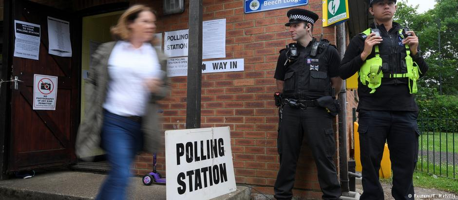

VELIKA BRITANIJA
Izbori u vremenu terorizma
Posle Francuske, i u Velikoj Britaniji se izbori idržavaju u senci terorističkog napada. No, i izlazak
Velike Britanije iz Evropske unije bi mogao da bude tema koja će izbore učiniti napetim. Otvori članak